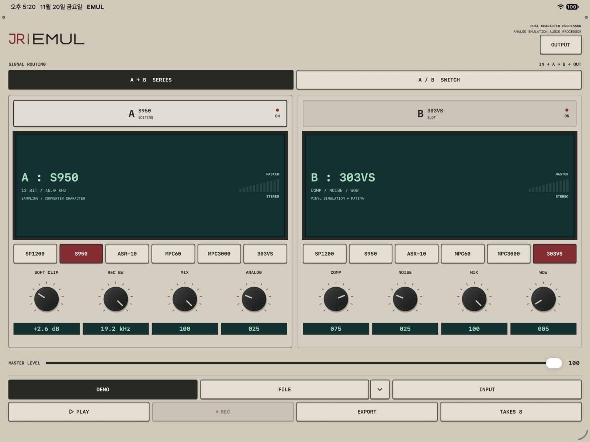
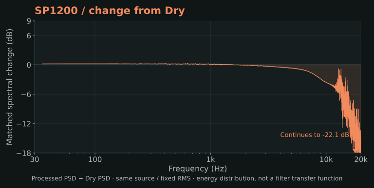
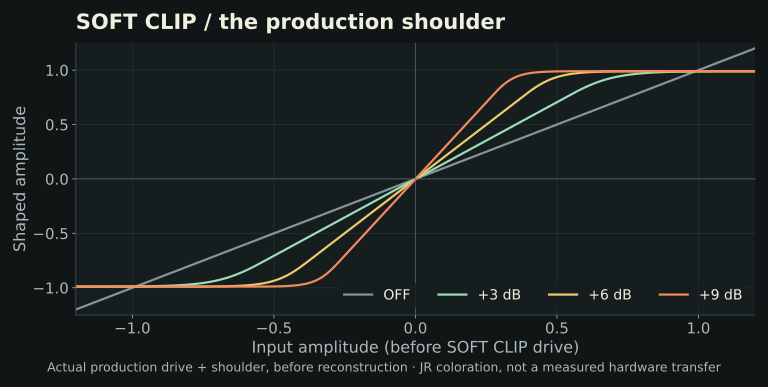
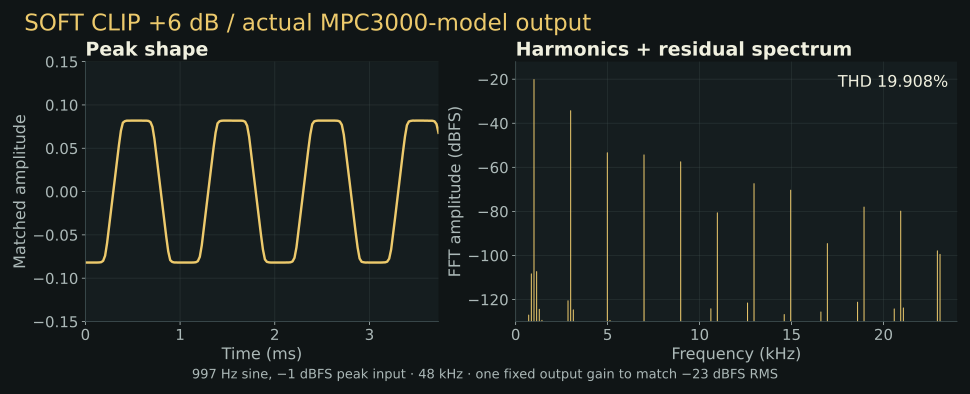
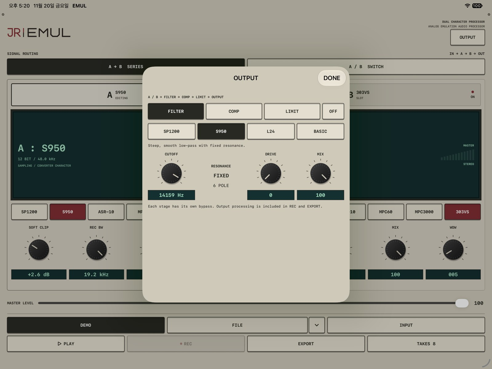

Start with the architecture.
Published sample clocks, word formats, circuit families and playback behavior guide each model’s starting point.
ANALOG EMULATION AUDIO PROCESSOR
Two independent character processors. Stack sampler color with vinyl movement, or switch between two sounds. Built for loops, live input and the way you play.
IN DEVELOPMENT · iPHONE / iPAD / AUv3

INSPIRED BY THE MACHINES / MADE FOR TODAY
Published sample clocks, word formats, circuit families and playback behavior guide each model’s starting point.
Input bandwidth, conversion character and playback contour are modeled as parts of a path. Each machine gets its own treatment.
Frequency response, phase, transitions and level are checked in software. Matched-level listening keeps volume differences from making the decision.
SIX WAYS TO FIND A TEXTURE
SP1200
A 12-bit sampling family with distinct RAW, WARM and restrained DYNAMIC output colors.
S950
A variable-bandwidth sampling family, with recording emphasis and a refined six-pole playback model treated separately.
ASR-10
A 16-bit conversion family with normal / low-clock character and a modeled voice-filter path.
MPC60
The nonlinear 12-bit storage family, with its own bandwidth and playback contour.
MPC3000
A 16-bit, 44.1 kHz conversion family with modeled reconstruction and output contour.
303VS
JR’s original vinyl-inspired mode: compression, surface texture and pitch motion. 303VS means Vinyl Simulation.
TWO SLOTS / ONE PERFORMANCE
Serial routing passes the signal through Slot A, then Slot B.
Routing overview. These controls explain the modes; they do not change the listening examples below.
Each slot keeps its own model, settings and mix. Follow the two slots with optional FILTER, COMP and LIMIT stages. Record the final output or export a file with the current settings.
SAMPLER CHARACTER / MEASURED IN SOFTWARE
Explore what changes in the signal, then hear the same drum phrase through five sampler-inspired models.
Same source. Different conversion paths.


Read the two views together. The sweep makes conversion images and bandwidth visible. The drum spectrum shows how that behavior interacts with a musical signal.
Keep the test conditions in view. Sampler drive, SOFT CLIP and ANALOG are off here. SP uses RAW output. The software’s complete record/playback path is measured, including S950 recording emphasis.
Push the peak. Keep the shape.
SOFT CLIP adds drive into a rounded peak transition. Quieter parts retain a nearly linear shape; peaks bend progressively as you push harder. It is a creative stage with its own amount, alongside the sampler model’s conversion character.

Hot-input demonstration: 997 Hz sine at −1 dBFS peak through the MPC3000 software model. All four displays are matched to −23 dBFS RMS.

Showing production SOFT CLIP +6 dB.
Follow the behavior inside the path.
The sample clock and converter are only part of the sound. We also model the surrounding bandwidth, reconstruction, filter response and optional nonlinear output stage. Each has a distinct role.
The input RC network shapes what reaches the converter. The output model distinguishes a fixed RC color from the SSM2044-family four-pole VCF behavior. DYNAMIC follows signal activity with deliberately restrained cutoff movement; RAW keeps the conversion character more exposed.
We treat the control response and gentle saturation as separate behaviors. This keeps the output character useful as a sampler finish, with subtle movement rather than a sweeping-filter performance effect.
The six-pole playback model follows the MF6-family filter architecture with fixed section damping. The sampler’s playback compensation is considered together with the DAC hold, while recording emphasis stays separate.
Phase compensation helps retain the intended analogue-style response after discretization. The standalone S950 output filter uses the six-pole filter core; it does not add the sampler’s recording emphasis or playback compensation.
A wave-digital model couples resistance, capacitance and a diode-pair nonlinearity. The circuit state carries from sample to sample, so the behavior depends on both frequency and level.
This optional shared JR voicing takes the PCM67/69A output-network family as a starting point, then adds a JR diode stage, musical amount scaling and mix. It is distinct from the SOFT CLIP shoulder and is not claimed to be the exact output circuit of every sampler.
Showing SP1200 signal-path anatomy.
Conceptual signal-flow diagrams. Symbols identify the modeled circuit families; they are not component schematics or transistor-level replicas. Numerical implementation and musical calibration remain JR’s independent work.
The sweep and drum spectrum answer different questions. All six models are rendered from the same source at 48 kHz with shared analysis settings. All new plots use fixed whole-render level matching to −23 dBFS RMS; the spectrogram also uses a common absolute color scale. The listening files below are separately matched to −23 LUFS integrated. RMS and LUFS are different measures, and these two matching procedures are kept separate. There is no moving normalization or limiter applied for presentation.
Detailed traces show software output, not physical hardware captures. Conversion images, quantization products and nonlinear harmonics are retained where present. Noise-free or image-free output is not a universal goal for a vintage character processor.
FUNDAMENTAL RESPONSE
This small-signal view isolates the main frequency response. Use it alongside the full spectra above.
Showing all five software models.
Full record/playback software responses, not hardware captures. S950 includes recording emphasis. Select a model to inspect its curve.
Ready · Dry · fixed −23 LUFS integrated
One original, synthesized drum phrase. One fixed gain per file to reach −23 LUFS integrated. No limiter or dynamic loudness matching. These are software renders.
The graph measures the complete record/playback path of the JR software model: 48 kHz render, −18 dBFS sine peak, TONE MAX, SOFT CLIP / ANALOG / input drive off. SP uses RAW output; ASR uses its normal clock. Each curve is normalized to its measured gain at 100 Hz. Fundamental components are measured; alias components are excluded from this graph.
S950’s high-frequency lift includes the modeled recording emphasis. It is different from a playback-only response. Listening examples use the same model settings and an original synthetic source, with fixed whole-file loudness matching.
Original software models are informed by published specifications, circuit documentation and available measurements. Some converter, clock and nonlinear details remain approximations. These curves are software measurements, not captured hardware overlays or a certification of unit-for-unit equivalence. Instrument names identify the inspirations; the manufacturers do not endorse these products.
A CLOSER LOOK / S950
A sampler’s recording response and playback response answer different questions. We keep S950’s recording emphasis separate from the playback filter, then refine the combined response. The graph below shows those two paths in the software model.

Modeled MAX-bandwidth responses, normalized at DC. The playback curve includes a nominal DAC-hold approximation; the complete curve adds the modeled recording emphasis. This is an analytical model illustration, not a captured hardware trace.
DESIGNED TO FIT YOUR SESSION
Select INPUT to process live audio. File and demo playback have their own PLAY control.
REC records the final output. EXPORT processes a file with the saved settings. TAKES keeps results available to preview, rename and share.
AUv3 effect operation, parameter automation and state recall. Your host handles transport and input routing.
Engine checks cover 22.05, 44.1, 48 and 96 kHz, mono/stereo behavior, transitions, offline output and automated parameter changes.
Software checks and Simulator integration support development. Physical-device listening and exact hardware matching remain separate validation steps.

THE FINAL STAGE
SP1200, S950, L24 and BASIC filter choices. A stereo-linked compressor. A lookahead sample-peak limiter. Enable the stages you want and keep the rest bypassed.
Read the output guideTHE NEXT STEP
JR EMUL is in development. Join Studio Notes for project news, or explore JR FX for a broader performance-effects workflow built around pads, buses and hands-on sound shaping.
Development references include E-mu SP1200 documentation and the SSM2044 filter family, Akai S950 service documentation and the National Semiconductor MF6 filter family, plus published sampler response measurements. ASR-10, MPC60 and MPC3000 use their documented conversion families as references. Proprietary firmware and original converter lookup tables are not claimed.
Original SSM2044 datasheet · MF6 datasheet · Keyboard sampler measurements, March 1989